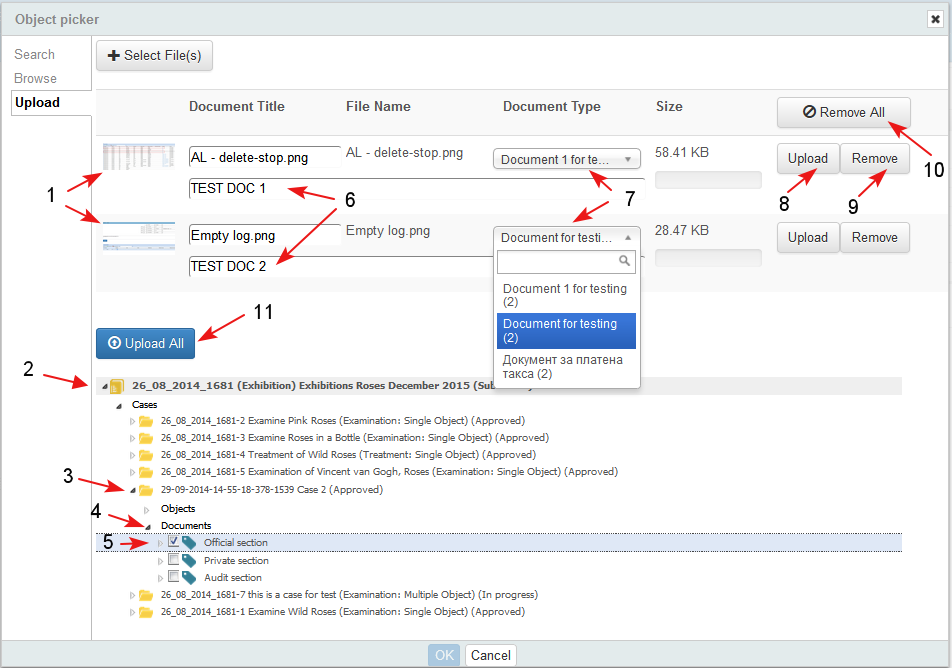

Object picker is a pop-up screen that allows the user to perform basic or advanced search in the system and to select (pick) one or more objects from the search result before to exiting off the screen.
The functionality is an extension to other basic system functionality such as: Manage object relationships, Image overlay, Insert links to system objects, etc., where the user has to search for an object he wants to create a relationship to, overlay it to another image, etc. ...
Tab "Search"
The user is allowed to search for objects from the whole system:
- The search location in the object picker (1) by default is selected to be in the context (2) from which the picker is called. The user is able to change the location.
- The user may select an existing filter (saved search) from the drop down menu (3)
- The user is able to use the advanced search option (4)
- In front of each object in the search result in the Object Picker, there is a select box (5) and the user could select one or more objects.
- In the Object Picker screen, there is "Reset" (6) action. If the user selects it, then both the search criteria and the search results are cleared and the user could start new search.
- The user finishes the operation by clicking "OK" (7) or cancels the operation clicking "Cancel" (8).

Tab "Browse"
The user is able to select item/s from the current project/ case (1-2-3-4-5-6-7).

Tab "Upload"
From the object picker screen the user is able to upload new documents from his/ her PC.
- The user clicks the button "Select File(s)" and selects documents from his/ her PC (1-2-3-4-5).

- The selected documents are added in the form (1) and the user:
- selects the location in the project tree and selects the context where he wants the new document to be uploaded (2-3-4-5)
- enters a brief description of the document/ s (6)
- selects from drop-down lists the document type (7)
- has also the following options:
- Upload (8)/ Remove (9) a single document
- Remove All (10)/ Upload All (11) documents from the list
- If the user selects the option Upload All (11)

- When the Upload action is completed (1) the user clicks OK (2).

- By default the newly uploaded document is attached to the current context, from which the picker is selected. The user may select another context in the project tree.
- The uploaded document is in parent-child relationship with the select context.
- Every document, uploaded from the object picker:
- is displayed in the relationships widget with parent-child relationship with the object selected as context for it
- is displayed in the project tree under the object selected for its context
- The uploaded document is created and treated as object of type "Document" in the system, which means that it is displayed with the respective object identifier (small icon of a document, or thumbnail, and ID, Title, etc.) and when the identifier is selected, the document is opened for review in PDF viewer.
- All actions for object of type "Document" are valid for the uploaded documents also - Edit details, Delete, Move, Clone, Lock, etc.